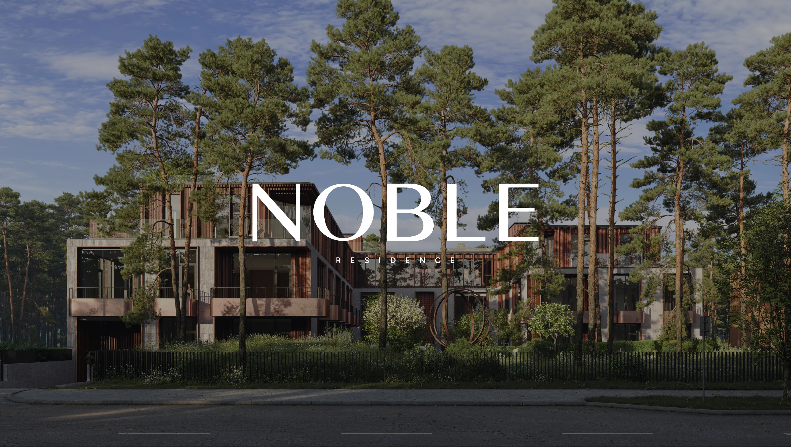
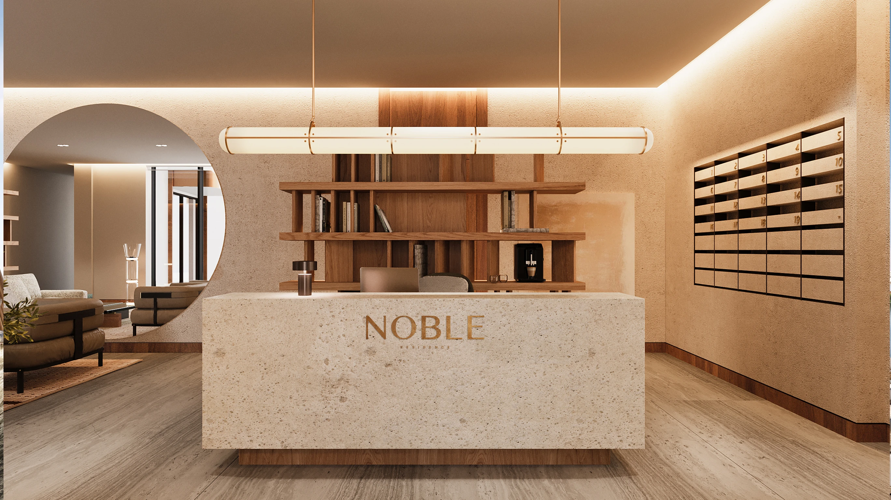
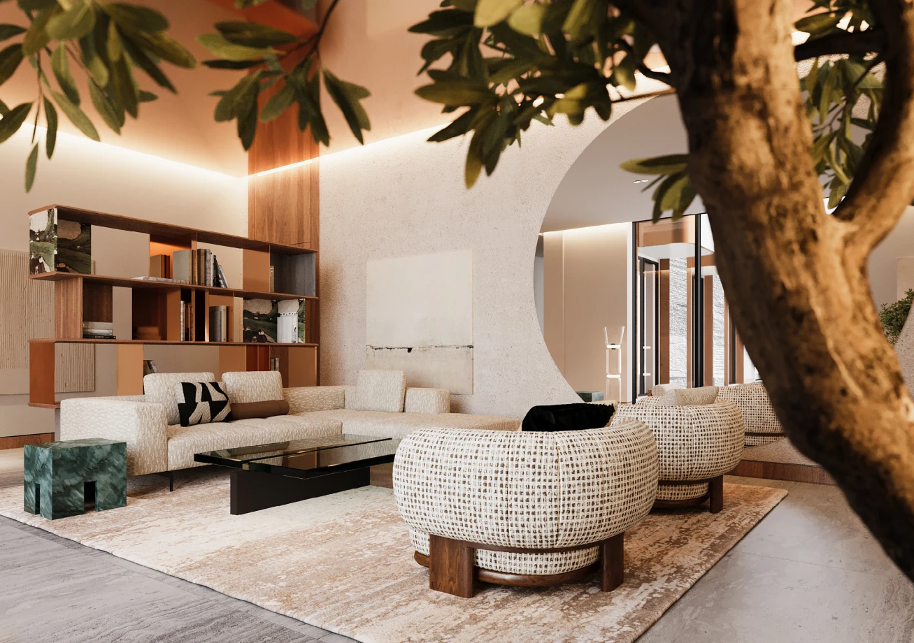
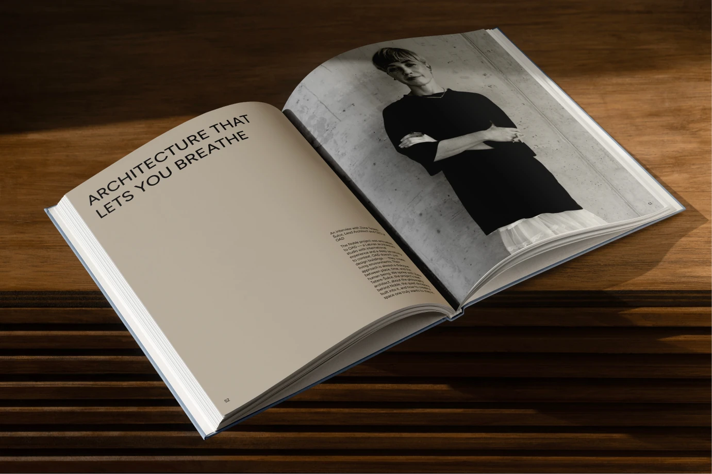
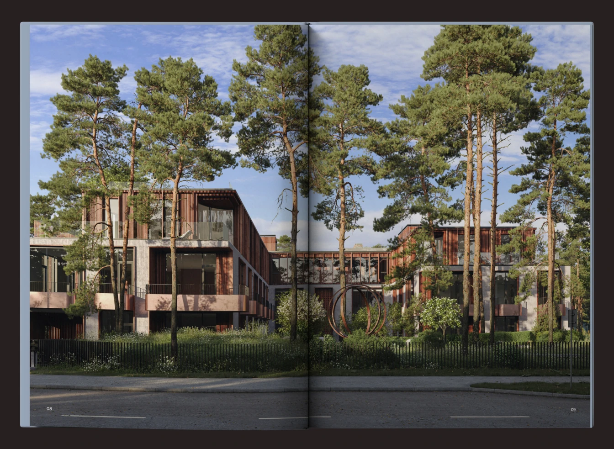
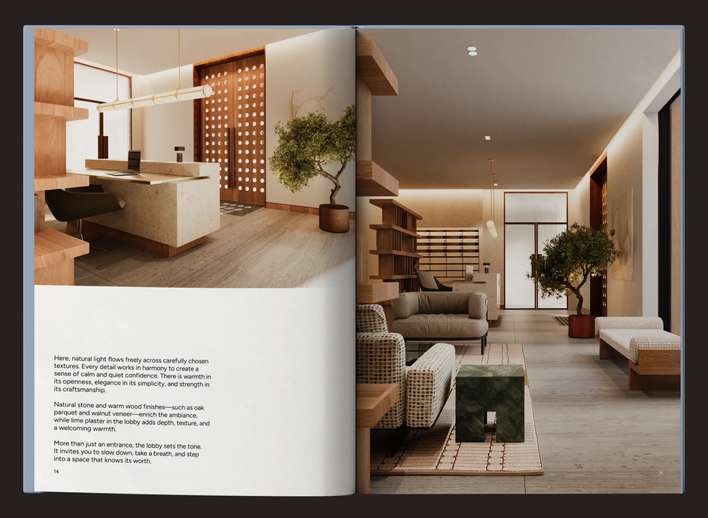
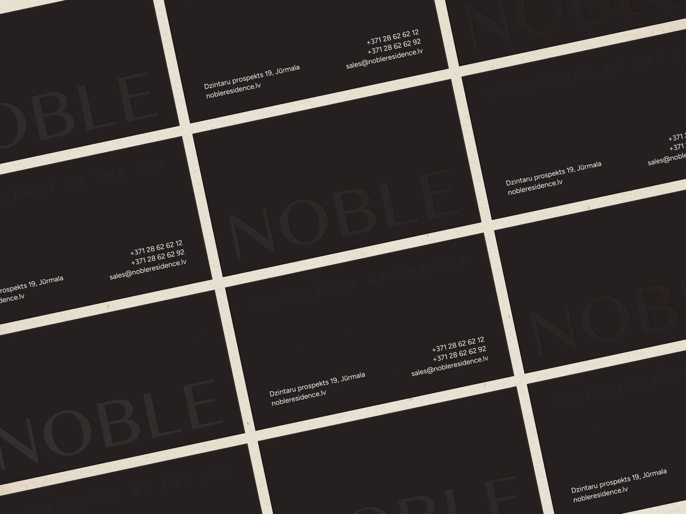
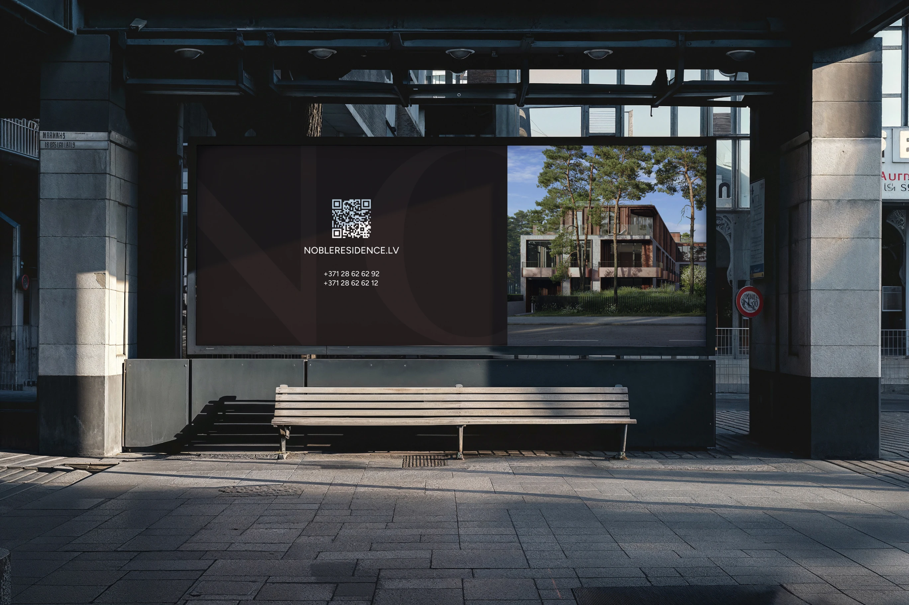
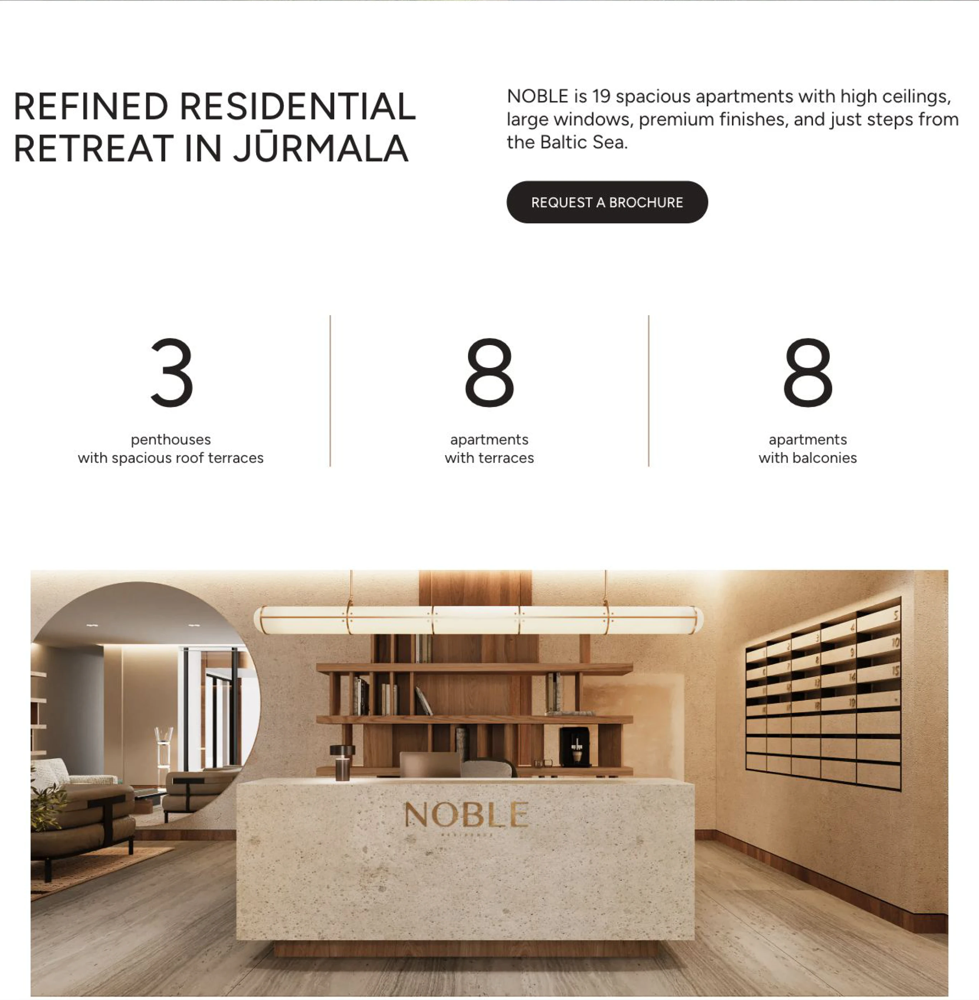
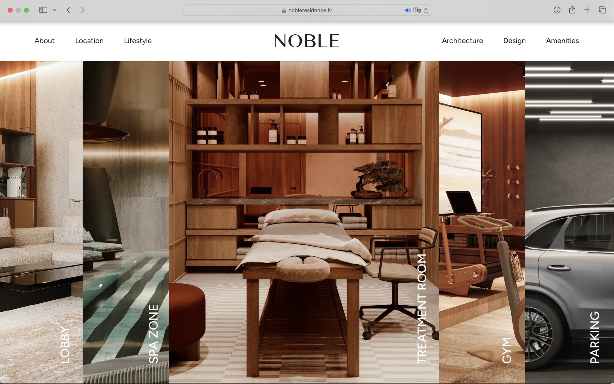

Noble
Премиальная резиденция в Юрмале. Полный дизайн сайта и участие в разработке айдентики бренда.
Дизайн сайта — Анна Дмитриева
Участие в разработке айдентики
2024

Сдержанная айдентика.
Продуманное присутствие.
Я участвовала в разработке бренда Noble, помогая сформировать визуальный язык, который объединяет современную архитектуру, натуральные материалы и атмосферу уединения.

Архитектура.
Пространство для жизни.
Тёплое дерево, светлый камень и редакционный подход к изображениям связывают бренд с пространствами резиденции.


Айдентика в деталях.
Визуальный язык продолжается в печатных материалах — от архитектурных брошюр до небольших деталей коммуникации.



Единый язык.
Во всех точках контакта.
Единая типографика и архитектурные изображения объединяют наружную рекламу и коммуникацию в социальных сетях.

Целостный
цифровой опыт.
Я полностью разработала дизайн сайта Noble, воплотив бренд в цифровом пространстве с акцентом на архитектуру, расположение и интерьеры резиденции.


Анна Дмитриева
Дизайн сайта
Участие в разработке айдентики
2024